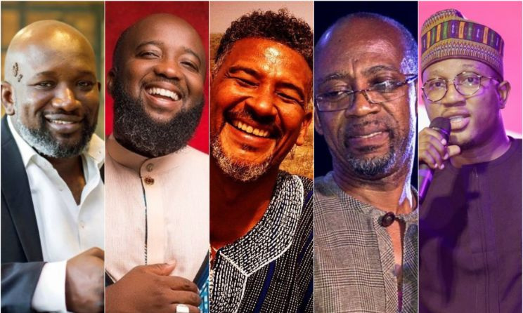

If you are simply looking for a place so lively and entertaining, then Ghana, the firstborn of highliife music is your last stop.

I can bodly say Ghana is the home of entertainment in Africa. Ghana is the firstborn son of highlife music with international highlife musicians such as Daddy Lumba ans Amakye Dede who set highlife music on another level globally. When it comes to entertainment you cannot be bored in Ghana with one of the strongest music industry in Africa. from comedy to every type of music genre to dance and comedy, GHana is the right place.
Ghana is home to alot of interesting sporting games such as Oware and Ampe. Ghana also has a strong and internationally recognised football team known as the black stars. The Ghana black stars led by the great Asamoah Gyan had won four Afcon trophies which is a big win for the country.